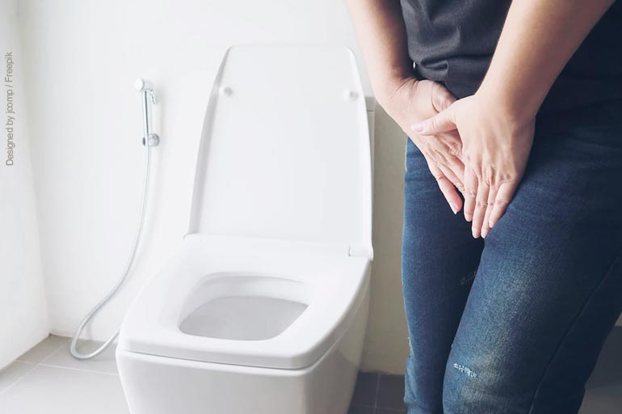

A fisioterapia uroginecológica é uma área especializada da fisioterapia que se dedica ao tratamento de disfunções do assoalho pélvico e do trato urinário nas mulheres. Essas disfunções podem incluir problemas como incontinência urinária, incontinência fecal, prolapsos genitais, dor pélvica crônica e disfunções sexuais. realizamos uma avaliação detalhada para identificar as causas subjacentes desses problemas e, em seguida, desenvolve um plano de tratamento individualizado para cada paciente.
Os tratamentos utilizados na fisioterapia uroginecológica incluem exercícios de fortalecimento e relaxamento do assoalho pélvico, biofeedback, eletroestimulação, técnicas de liberação miofascial, orientações posturais e mudanças no estilo de vida. O objetivo é melhorar a função do assoalho pélvico, fortalecer os músculos da região e restaurar o controle da bexiga e do intestino.
A fisioterapia uroginecológica tem se mostrado eficaz no tratamento dessas condições, muitas vezes proporcionando alívio dos sintomas e melhorando a qualidade de vida das pacientes. É importante buscar um fisioterapeuta especializado nessa área para receber um tratamento adequado e personalizado. Além disso, a fisioterapia uroginecológica pode ser uma excelente opção de tratamento tanto como forma de prevenção quanto como parte do tratamento conservador ou complementar a outras abordagens terapêuticas para essas condições.